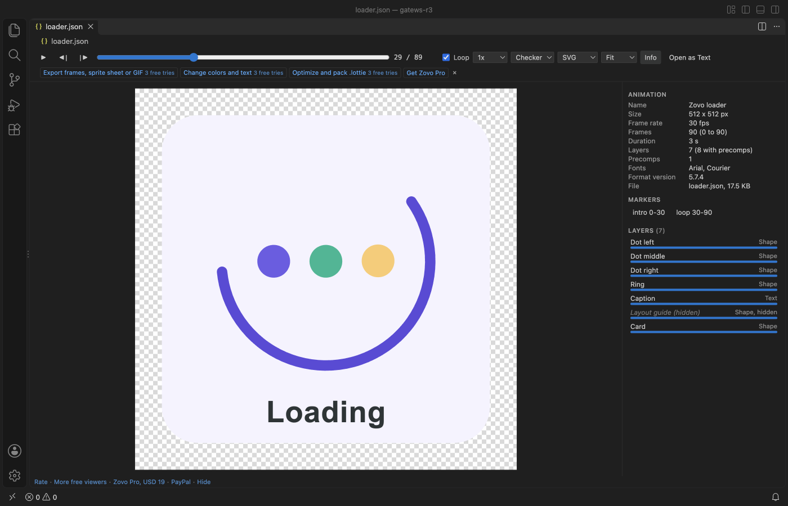

Lottie Viewer & Lottie Player
Lottie Viewer & Lottie Player, a VS Code extension by Zovo
Lottie viewer by Zovo for VS Code: play Lottie JSON (Bodymovin) and .lottie files right in the editor. Play, pause, loop, change the speed and scrub frame by frame, with the size, frame rate, layers and markers next to the animation. Works offline with a bundled player, with no account and no network calls.
Free, MIT license. Needs VS Code 1.75.0 or newer. Extension ID zovo.zovo-lottie-viewer, version 0.1.0.

Questions people ask
Is Lottie Viewer & Lottie Player free?
Yes. Lottie Viewer & Lottie Player is free and MIT licensed.
How do I install Lottie Viewer & Lottie Player?
Click "Install in VS Code" above, or search for zovo.zovo-lottie-viewer in the Extensions view.
Free
- Open
.lottiefiles with one click, and Lottie.jsonfiles with the play button in the editor title: the preview opens to the side and follows your edits as you type. Open With... > Lottie Viewer also works for any.jsonfile. - Player controls: play and pause, loop, speed from 0.25x to 3x, step one frame back or forward, a frame scrubber with the frame number, and keys (Space, Left, Right, Home, End).
- The preview always has a size: Fit, 50%, 100% or 200%, on a checkerboard, dark, light or the editor's own background, so transparent parts are easy to see.
- SVG or canvas player, switched in the toolbar.
- Info panel: size, frame rate, frames and duration, format version, fonts, markers (click to jump), and every layer with its type and in and out frames (click to jump).
- Notes for what the preview cannot show: missing images next to the file, expressions, web fonts, audio and video layers, damaged files inside a package.
.lottiepackages: version 1 and version 2 layouts, several animations in one file with a picker, images from the package.- No network requests, no telemetry, nothing shows when VS Code starts.
Zovo Pro
Zovo Pro: USD 19 once. One payment unlocks the Pro tools in every Zovo extension. Each Pro tool has 3 free tries:
- Export frames, sprite sheet or GIF: the current frame as PNG (1x, 2x, 4x or half size) or SVG, a frame range as a PNG sprite sheet with a JSON frame map, or as an animated GIF with your frame rate, size and background.
- Change colors and text: every fill, stroke, gradient, solid and text colour with how often it is used, and every text string. Change them and the preview updates at once, then save a recoloured copy for a brand variant or a dark mode.
- Optimize and pack .lottie: a smaller copy with numbers rounded, hidden layers and unused assets and fonts removed, with the size before and after; pack JSON animations and their images into one
.lottiefile, or unpack a.lottieinto a folder of JSON files and images.
The Pro tools are in the viewer toolbar, the Command Palette (they end in "(Pro)") and the Explorer right-click menu of .lottie files ("Zovo Pro: ..."). A try counts only when the tool wrote its file; Escape never uses one. lottieViewer.showProTools: false hides all of it.
Run Zovo Pro: Get Zovo Pro to pay by card, with GitHub Sponsors or PayPal (team of 5: USD 59), or to enter a key.
How to use it
- A
.lottiefile opens in the viewer when you click it. - A Lottie
.jsonfile opens as text, as JSON should. Press the play button in the editor title (Open Lottie Preview to the Side) to watch it next to the text. The button shows only for JSON files that look like a Lottie animation. - To open every Lottie JSON in a folder with the viewer, add
"workbench.editorAssociations": { "animations/*.json": "lottieViewer.player" }with your own pattern to your settings.
Settings
lottieViewer.background:checker(default),dark,lightoreditor.lottieViewer.renderer:svg(default) orcanvas.lottieViewer.autoplayandlottieViewer.loop: on by default.lottieViewer.maxFileSizeMB: larger files open with a message instead of the player (default 50).lottieViewer.showProTools,lottieViewer.askForRating,lottieViewer.showSupportLinks.
Privacy
No network requests and no telemetry. The page that plays the animation may not load anything from the web, so web fonts and image URLs in a file are never fetched. Images next to the file are read from your disk to show them. Files are written only by the Pro tools, to the place you pick.
Known limits
- Expressions are not run (the bundled player is the build without expressions, so nothing in a file can run code). Properties driven by an expression show their keyframe values.
- Text uses fonts installed on your computer. A font the animation loads from the web is not downloaded.
- 3D layers are drawn flat, as in the web player. Audio and video layers are not played.
- Themes and state machines inside a
.lottiefile are listed but not applied. - A GIF has one palette of up to 255 colours and on-or-off transparency, so soft edges look best on a White or Black background.
Guides
Install Lottie Viewer & Lottie Player
Click the button to open VS Code and install it, or press Ctrl+P (Cmd+P on macOS) in VS Code and run ext install zovo.zovo-lottie-viewer.
Free, MIT license. Needs VS Code 1.75.0 or newer. Extension ID zovo.zovo-lottie-viewer, version 0.1.0.
Source code and issues are on GitHub.
Zovo Pro and support
Zovo Pro: USD 19 once, every Zovo viewer. It turns on the Pro tools in this extension and in the other Zovo extensions you use. The free features stay free.
After a card payment your license key shows on the next page. Paste it with the command "Zovo Pro: Enter a key".
You can also support the work with no Pro:
Need your format supported?
Open a format request with a sample file, and I reply there whether it can be done. For USD 299 once, through this GitHub Sponsors tier, I add your file format or a missing feature to this extension, with tests, within 7 days.